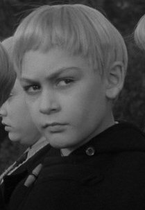

Tuesday, June the 19th, 2012
back to: title, date or indexes
[A slightly shorter version of this piece appeared in June 2006.]
There is, or may have been, an old superstition that every farmyard has its own fiend. It is said that Beelzebub personally allotted each fiend to its farmyard, and ratcheted up the fiendishness of his dastardly plan by making the fiends extremely hard to identify. So, for example, neighbouring farmyards may have very, very different resident fiends—a pig here, an old rusty iron pail there, a one-legged hen in one farmyard and a big bright red tractor belching smoke in another. Exorcising a farmyard of its fiend is thus fraught with difficulty, for the average countryside exorcist, stepping through the gate of a farmyard for the first time, does not know where to begin to look.
There is great disparity in the fiendishness of farmyard fiends, and some diabolists have argued that Beelzebub treated the whole matter with an uncharacteristic lack of diabolic concentration. For every farmyard that is stricken by an energetic fiend, there are many more that can pass for years, even decades, in untroubled bucolic peace. But of course it is the former that gain attention. Who can forget the ruination visited upon Scroonhoonpooge Farmyard in the 1930s, all those crop failures, diseases, fires, murders, contaminations and inexplicable barn collapses, which ceased only when a marauding night-time squirrel was captured in a net by Father Dermot Boggis and subjected to the full rigour of his holy wrath? It took six months for the exorcist to expel every last vestige of fiendishness from the squirrel, leaving the poor bushy-tailed mammal thin and shrivelled and exhausted and close to death. And yet, as it was slowly revived by the coddling of Old Ma Purgative at her verdant squirrel sanctuary, so too did the farmyard flourish anew, with majestic fields of golden wheat, gleaming new buckets replacing the old rusty pails, and happy, happy pigs.
You would be forgiven for thinking that the taxonomy of farmyard fiends is precisely the kind of subject to which Dobson would have devoted a pamphlet or two. Indeed, Marigold Chew often pressed him to tackle the topic, supplying the out of print pamphleteer with a constant stream of newspaper cuttings about hideous devastations of an agricultural kidney. She was a subscriber to the once popular monthly magazine Glimpses Of Farmyard Ruin, and wrote many letters to the editor, some of which were published and one of which (October 1954) was selected as ‘Letter of the Month’, for which Marigold received a prize. Unfortunately, the prize was a very large hog with a brain disease which went on wild rampages through the house. Mischievously, the editor of the magazine, who had his own farmyard, regularly used the monthly prize to rid himself of his farmyard fiends.
Ah yes, note the plural. What happens, you will ask, when a fiend of the farmyard is identified and destroyed, whether by slaughter, exorcism, or being given away as a prize in a raffle, tombola, or by some other means, as happened with Marigold Chew? Did Scroonhoonpooge Farmyard stay fiend-free once its sinister squirrel had its demons cast out? How attentive was Beelzebub to the welfare of those he had sent to wreak havoc in our bosky rural domains? Were new fiends recruited and trained to carry out various infernal farmyard acts of fiendishness? These and other questions were answered by Father Dermot Boggis himself, in his deathbed ravings, carefully transcribed by his wrinkled old helpmeet, the widow Popsicle. Among the thousands of pages she scribbled, we find this startling passage:
Gaaaa… gaaaa… inexplicable torment of the devil's long poking fork… his ladle… cataclysm of shuddering abasement in the pit… and when did you last see your potatoes?… gaaaa… have the fields been hoed?… I see hundreds of cows… thousands of cows… millions of cows… brutes… the flames of the fiery furnace… a crow on the branch of a dead tree… blasts of lightning… no diesel for the tractor… blight!… blight!… worms eating the flesh of resurrected horses… never resurrect a horse… never… pass me that feeble lamp… puddles of sludge and slop and constant rainfall… forty days and forty nights… flooded fields… the wheat ruined… ergot poisoning… a gruesome figure in the shroud of death… find me a lonely cave… remote from human kind… dark as the midnight grave… and dismal as my mind… gaaaa…
And with that last brief flash of lucidity, the remembered words of John Eccles (c.1688–1735), Father Boggis relapsed into inanity, the verbatim record covering four hundred pages' worth of the widow Popsicle's palsied pencil-scrawl. The clue to the farmyard fiends' damnable resilience is, I think, in that reference to the crow perched on the branch of a dead tree. Think about it. But don't think too hard, for then all you will see in your mind's eye is the bird and the branch. You need to let the thought of the crow on the branch of a dead tree flit into your brain, like a swooping bat, and then out again. You need to think of it with the mental equivalent of peripheral vision. You need to try not to think about it, just as Gordon Zellaby tries not to think about the bomb he has planted to kill the Midwich Cuckoos in John Wyndham's novel of 1957, filmed as Village Of The Damned in 1960, directed by Wolf Rilla and starring George Sanders as the heroic, academic, and terminally ill Zellaby. Wyndham's fiends are not specifically farmyard fiends, but close enough, close enough. Close enough, too, to little Martin Amis, as can be seen by comparing these two pictures, one of little Mart when tiny, the other a still from the film.

But now the dawn is near. The sun will soon be lighting your path to the far flung fields. Go and till and plough and harrow, feed your horses and your cows and your happy, happy pigs. You may spit upon your farmyard fiend. It will pester you no more. It was only ever a superstition, or it might have been.
Hooting Yard on the Air, June the 14th, 2006 : “The Big Metal Fence” (starts around 00:13)
Hooting Yard on the Air, April the 18th, 2007 : “Cargpan And Beppo” (starts around 23:48)
Hooting Yard on the Air, April the 28th, 2016 : “Attempted Seduction of Dobson by a Floozie” (starts around 09:52)
Hooting Yard on the Air, April the 18th, 2019 : “On Fiends Of The Farmyard” (starts around 00:21)